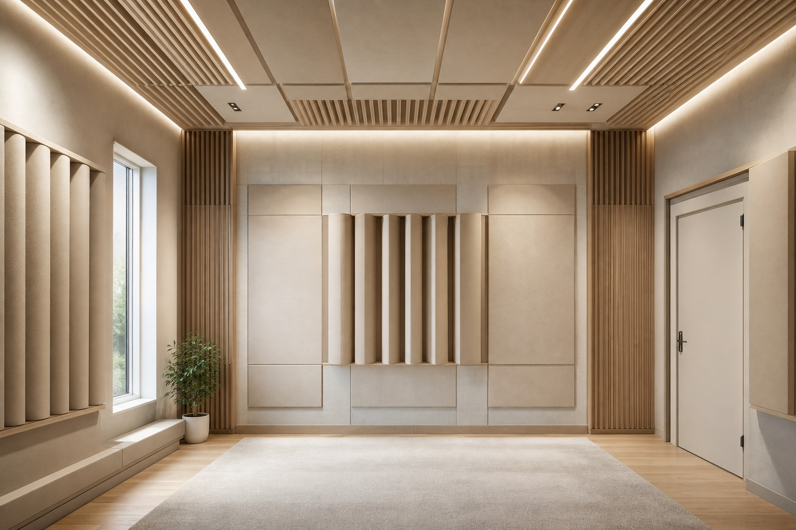

Студия, кинотеатр и медиапространство
Звукоизоляция и внутренняя акустика проектируются вместе: защита от внешнего шума, контроль отражений и точность воспроизведения.

Две задачи одновременно
Звукоизоляция защищает соседей и дом от громкого контента. Внутренняя акустика обеспечивает разборчивость, баланс частот и комфорт прослушивания внутри помещения.
Формат работы
Обычно это спецпроект с обследованием, моделированием и авторским сопровождением реализации.
Опишите объект — подскажем, нужна ли дистанционная оценка, выезд, проект или промышленное решение.
Отправить заявку